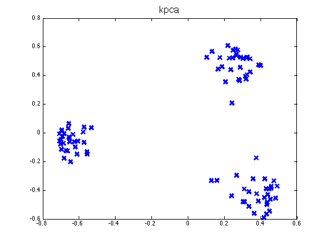
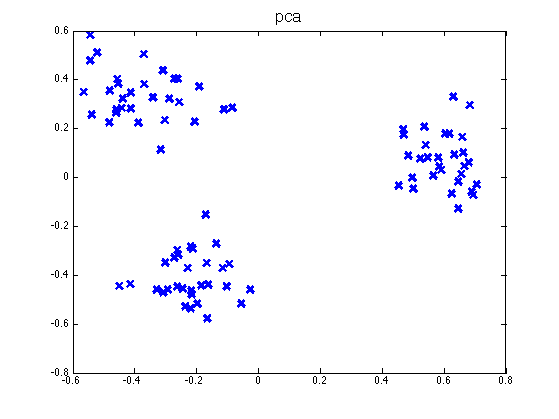

Kernel pca demo
rbf_var = 0.1;
xnum = 4;
ynum = 2;
max_ev = xnum*ynum;
x_test_num = 15;
y_test_num = 15;
cluster_pos = [-0.5 -0.2; 0 0.6; 0.5 0];
cluster_size = 30;
num_clusters = size(cluster_pos,1);
train_num = num_clusters*cluster_size;
patterns = zeros(train_num, 2);
range = 1;
randn('seed', 0);
for i=1:num_clusters,
patterns((i-1)*cluster_size+1:i*cluster_size,1) = cluster_pos(i,1)+0.1*randn(cluster_size,1);
patterns((i-1)*cluster_size+1:i*cluster_size,2) = cluster_pos(i,2)+0.1*randn(cluster_size,1);
end
X = patterns;
Zkpca = kpcaSimple(X',2)';
figure;
plot(Zkpca(:,1), Zkpca(:,2), 'x', 'markersize', 10, 'linewidth', 3)
title('kpca', 'fontsize', 16);
printPmtkFigure('kpcaDemo2Kernel')
[B, Zpca, evals, Xrecon, mu] = pcaPmtk(X, 2);
figure;
plot(Zpca(:,1), Zpca(:,2), 'x', 'markersize', 10, 'linewidth', 3)
title('pca', 'fontsize', 16);
printPmtkFigure('kpcaDemo2Regular')
 